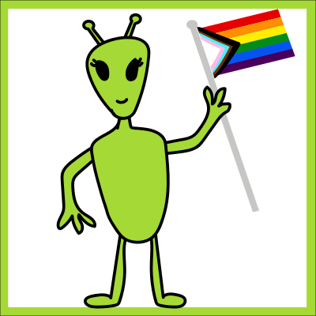
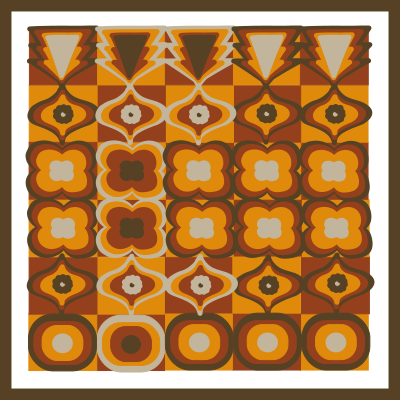
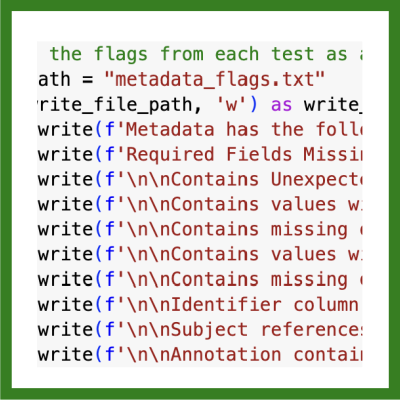
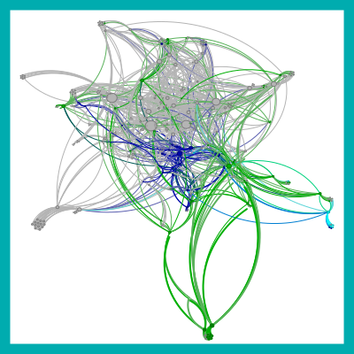
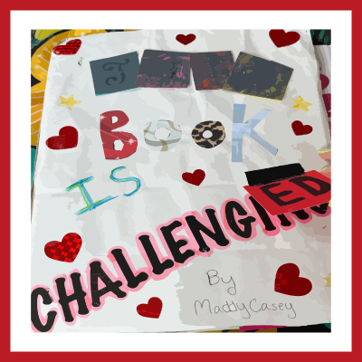

Student Work Portfolio
Queer Speculative Fiction LibGuide

Books as Art,
Art as Data

Python
Metadata Validator

Representation in Librarianship

This Book is Challeng(ing/ed)

PDF Portfolio (for MsLIS graduation requirement):
Text only Portfolio
Home Page